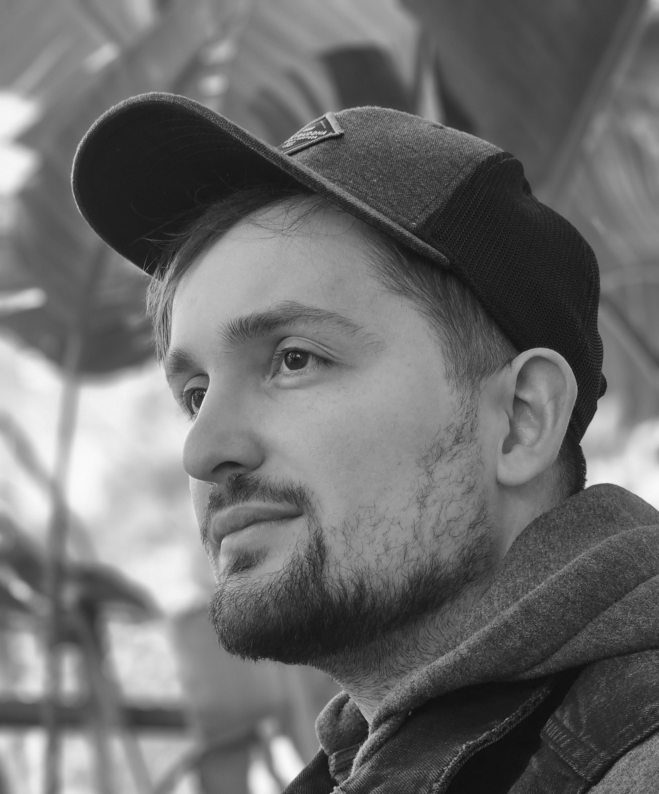

Panagiotis Georgiadis |
CV |
||||||
|  | I am a PhD researcher at the National Centre for Text Mining (NaCTeM). My interest is in Event Extraction, a subtask of Natural Language Processing (NLP). |
||||||
PhD research at NaCTeM |
Publications |
||||||
Espinosa K, Georgiadis P, Christopoulou F, Ju M, Miwa M, Ananiadou S. Comparing neural models for nested and overlapping biomedical event detection. BMC Bioinformatics. 2022;23(1):211. Published 2022 Jun 2. doi:10.1186/s12859-022-04746-3 |
|||||||
Vasilakes J, Georgiadis P, Nguyen NTH, Miwa M, Ananiadou S. Contextualized medication event extraction with levitated markers. J Biomed Inform. 2023;141:104347. doi:10.1016/j.jbi.2023.104347 |
|||||||